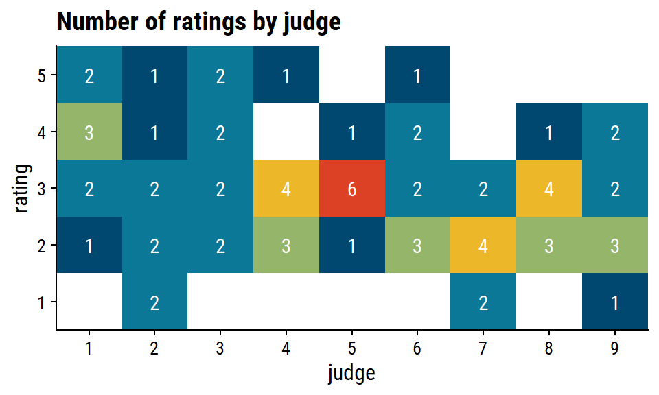
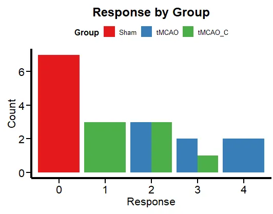
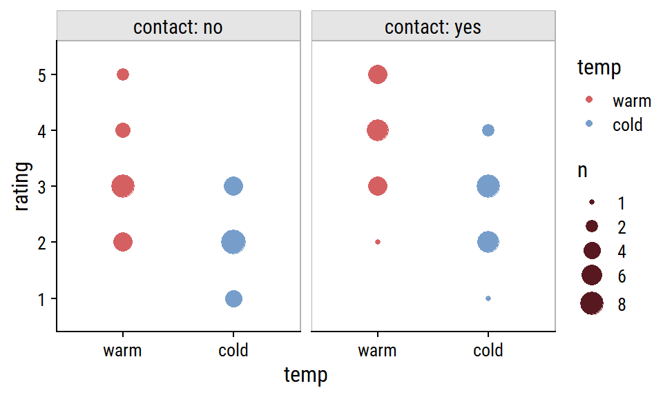
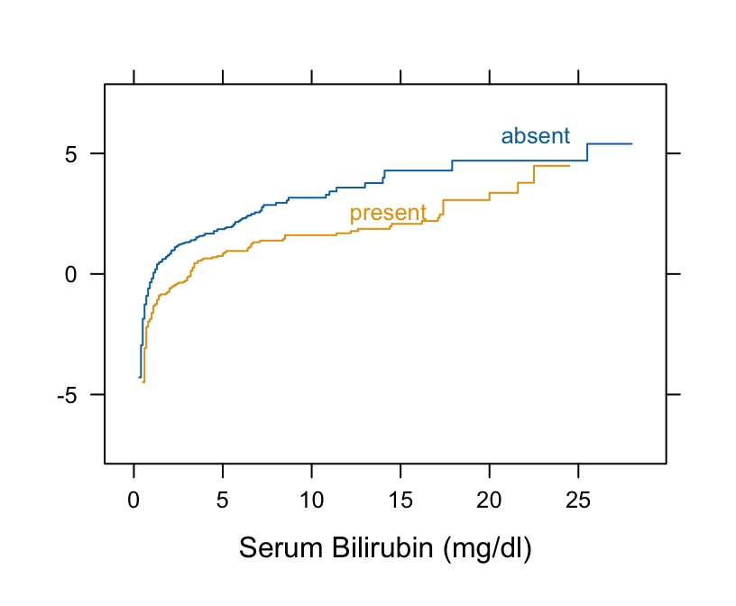
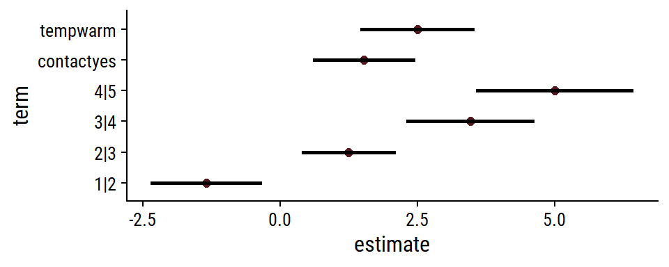
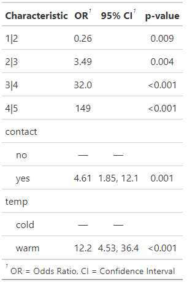
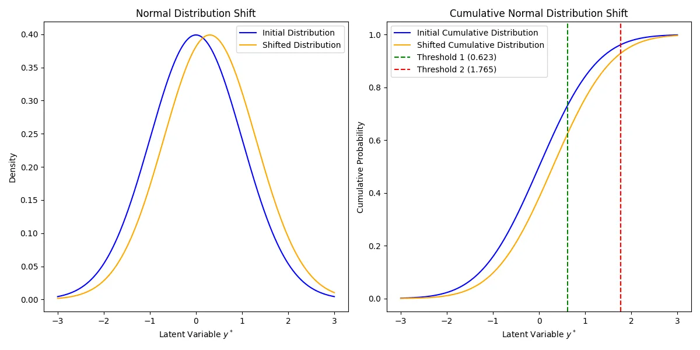
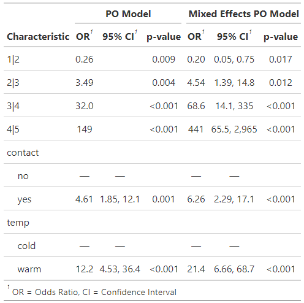

Ordinal
- Harrell’s RMS notes/chapters
- Harrell’s data methods post
- Both TDS articles
Misc
- Also see
- Notes from
- Packages
- Cumulative Link Models (CLMs)
- {ordinal} (Vignette)
- CLMs and CLMMs with location, scale and nominal effects (aka partial proportional odds), structured thresholds and flexible link functions
- Methods for marginal means, tests of functions of the coefficients, goodness-of-fit tests
- *Response variable should be an ordered factor class*
- Compatible with {marginaleffects}, {emmeans}, {ggeffects}
- Package owner doesn’t seem to be developing the package further except for keeping on CRAN. Still has plenty of functionality, but it can take extra effort to get certain metrics and external packages to work with certain models (e.g.
clmm,clmm2for mixed effects) - Check issues on its github for extra functionality since some users have added code there.
- {MASS::polr}
- Standard CLMs allowing for the 5 standard link functions but no further extensions
- {VGAM::vglm}
- CLMs using the cumulative link; allows for several link functions as well as partial effects.
- Proportional odds model (cumulative logit model)
- Proportional hazards model (cumulative cloglog model)
- Continuation ratio model (sequential logit model)
- Stopping ratio model
- Adjacent categories model
- {rms::lrm, orm}
- CLMs with the 5 standard link functions but without scale effects, partial or structured thresholds.
- {mvord}:
- An R Package for Fitting Multivariate Ordinal Regression Models
- {ordinalNet} (Vignette):
- Fits ordinal regression models with elastic net penalty. Supported model families include cumulative probability, stopping ratio, continuation ratio, and adjacent category
- {brms}
- CLMs that include structured thresholds in addition to random-effects.
- {ordinalgmifs}
- Ordinal Regression for High-Dimensional Data
- {{statsmodels}}
- Probit, Logit, and Complementary Log-Log model
- {brglm2}
- Estimation and inference from generalized linear models using various methods for bias reduction
- Can be used in models with Separation (See Diagnostics, GLM >> Separation)
- Able to fit proportional-odds models and non-proportional odds models
- Reduction of estimation bias is achieved by solving either:
- The mean-bias reducing adjusted score equations in Firth (1993) and Kosmidis & Firth (2009)
- The median-bias reducing adjusted score equations in Kenne et al (2017)
- The direct subtraction of an estimate of the bias of the maximum likelihood estimator from the maximum likelihood estimates as prescribed in Cordeiro and McCullagh (1991).
- {ordinal} (Vignette)
- ML
- {partykit::ctree}
- Takes ordered factors as response vars and handles the rest (see vignette)
- {ordinalForest}
- Prediction and Variable Ranking with Ordinal Target Variables
- {partykit::ctree}
- Support
- {marginaleffects} - Supports {ordinal}
- Cumulative Link Models (CLMs)
- Resources
- Chapter 23 (Kurz’s brms, tidyverse version), Doing Bayesian Analysis by Kruschke
- Power and Sample Size Calculations for a Proportional Odds Model (Harrell)
- Paired data: Use robust cluster sandwich covariance adjustment to allow ordinal regression to work on paired data. (Harrell)
- Ordered probit regression: This is very, very similar to running an ordered logistic regression. The main difference is in the interpretation of the coefficients.
- Sample size: Both ordered logistic and ordered probit, using maximum likelihood estimates, require sufficient sample size. How big is big is a topic of some debate, but they almost always require more cases than OLS regression.
- Harrell summary and comparison of a PO model vs Logistic in the case of an ordinal outcome
.png)
- Formula is an ordinal outcome, Y, with binary treatment variable, Tx, and adjustment variables, X.
- Sometimes researchers tend to collapse an ordinal outcome into a binary outcome. Harrell is showing how using a logistic model is inefficient and lower power than a PO model
- Original is interactive with additional information (link)
- Includes: efficiency, infomation used, assumptions, special cases, estimands, misc
EDA
Misc
- Also see Surveys, Analysis >> Visualization
Crosstabs
Example: Aggregated Counts
ftable(xtabs(~ public + apply + pared, data = dat)) ## pared 0 1 ## public apply ## 0 unlikely 175 14 ## somewhat likely 98 26 ## very likely 20 10 ## 1 unlikely 25 6 ## somewhat likely 12 4 ## very likely 7 3apply is the response variable
Empty cells or small cells: If a cell has very few cases, the model may become unstable or it might not run at all.
Example: Observation Level (article)

Code
wine %>% dplyr::transmute(temp, contact, bottle, judge, rating = as.numeric(rating)) %>% tidyr::pivot_wider(names_from = judge, values_from = rating) %>% gt::gt() %>% gt::tab_spanner(columns = `1`:`9`, label = "judge") %>% gt::data_color( columns = `1`:`9`, colors = scales::col_numeric( palette = c("white", wine_red), domain = c(1, 5) ) )- Data from Proportional Odds (PO) >> Example 1
- Most judges seem to rate warm bottles highest especially when contact = yes.
Example: Look for variation in a potential random effect
Code
wine %>% count(judge, rating) %>% ggplot(aes(x = judge, y = rating)) + geom_tile(aes(fill = n)) + geom_text(aes(label = n), color = "white") + scale_x_discrete(expand = c(0, 0)) + scale_y_discrete(expand = c(0, 0)) + theme(legend.position = "none") + labs(title = "Number of ratings by judge")- There’s some judge-specific variability in the perception of bitterness of wine. judge 5, for instance, doesn’t stray far from rating = 3, while judge 7 didn’t consider any of the wines particularly bitter.
Grouped Bar
Example
Code
ggplot(df, aes(x = factor(Response), fill = Group)) + geom_bar(position = "dodge") + labs(x = "Response", y = "Count", title = "Response by Group") + theme_minimal() + scale_fill_brewer(palette = "Set1") + plot_theme() + theme(legend.position = "top", legend.direction = "horizontal")- This is just to get an idea of the frequencies for each group level.
Histograms
The shape can help you choose a link function (See Cumalative Link Models (CLM) >> Link Functions)
If distributions of a pre-treatment/baseline (outcome) variable looks substantially different than the (post-treatment) outcome variable, then the treatment likely had an effect
Example: Simple Percentages
\(\mbox{lvl}_1 = \mbox{lvl}_{1/N} = 0.2219\), \(\mbox{lvl}_2 = 0.2488\), \(\mbox{lvl}_3 = 0.25\), and \(\mbox{lvl}_4 = 0.2794\)- Monotonicly increasing, so skewing left
Example: Histogram, Cumulative Proportion, Log Cumulative Proportion (article)

Code
wine_prop <- wine %>% count(rating) %>% mutate(p = n / sum(n), cumsum_p = cumsum(p)) ( ggplot(wine_prop, aes(x = rating, y = p)) + geom_col(fill = wine_red) + scale_y_continuous(labels = scales::percent, expand = c(0, 0)) + labs(x = "j", y = "proportion") ) + ( ggplot(wine_prop, aes(x = as.integer(rating), y = cumsum_p)) + geom_point(size = 2) + geom_line(size = 1) + labs(x = "j", y = "cumulative proportion") ) + ( ggplot(wine_prop, aes(x = as.integer(rating), y = log(cumsum_p) - log(1 - cumsum_p))) + geom_point(size = 2) + geom_line(size = 1) + labs(x = "j", y = "logit(cumulative proportion)") )- Data from Proportional Odds (PO) >> Example 1
- Proportions are used since the response is from a multinomial distribution
- See Cumulative Link Models (CLM) >> Response variable follows the Multinomial distribution
- Distribution looks a little right-skewed.
Bi-variate boxplots
Look for trends of the median
Example: Numeric vs Ordinal

Code
ggplot(dat, aes(x = apply, y = gpa)) + geom_boxplot(size = .75) + geom_jitter(alpha = .5) + facet_grid(pared ~ public, margins = TRUE) + theme(axis.text.x = element_text(angle = 45, hjust = 1, vjust = 1))- In the lower right hand corner, is the overall relationship between apply and gpa which appears slightly positive.
Pre-intervention means of the outcome by explanatory variables
Example
CC = 0, TV = 0 2.152 CC = 0, TV = 1 2.087 CC = 1, TV = 0 2.050 CC = 1, TV = 1 1.979- CC and TV are binary explanatory variables
- The mean score of the pre-treatment outcome doesn’t change much given these two explanatory variables.
- I think this shows that for the most part that assignment of the two different treatments was balanced in terms of the scores of the baseline variable.
Dot Plots
Example: 4 explanatory factor variables (article)
Code
wine %>% count(contact, rating, temp) %>% mutate(temp = fct_rev(temp)) %>% ggplot(aes(x = temp, y = rating, color = temp)) + geom_point(aes(group = temp, size = n)) + facet_wrap(~contact, scales = "free_x", labeller = labeller(contact = label_both)) + scale_size(breaks = c(1, 2, 4, 6, 8)) + add_facet_borders()- Data from Proportional Odds (PO) >> Example 1
- Most judges seem to rate warm bottles highest especially when contact = yes.
- Compared to the crosstab, I think this more clearly shows that there is an effect present between temp and rating especially when moderated by contact.
{kind=link}
{kind=link}
Diagnostics
cond.H - Located in top row of GOF metrics. The condition number of the Hessian is a measure of how identifiable the model is.
- Values larger than 1e4 indicate that the model may be ill defined
Deviance: \(-2 \cdot (\mbox{LogLik Reduced Model} - \mbox{LogLik Saturated model})\)
- Likelihood ratio statistic for the comparison of the full and reduced models
- Reduced model is the model you just fit.
- Can usually be extracted from the model object (e.g. {ordinal}:
ll_reduced <- mod$logLik)
- Can usually be extracted from the model object (e.g. {ordinal}:
- Saturated Model also called the Full Model
Also see Regression, Discrete >> Terms
The Full Model has a parameter for each observation and describes the data perfectly while the reduced model provides a more concise description of the data with fewer parameters.
Usually calculated from the data themselves
data(wine, package = "ordinal") tab <- with(wine, table(temp:contact, rating)) ## Get full log-likelihood (aka saturated model log-likelihood) pi.hat <- tab / rowSums(tab) (ll.full <- sum(tab * ifelse(pi.hat > 0, log(pi.hat), 0))) ## -84.01558
GOF (rule of thumb): If the deviance about the same size as the difference in the number of parameters (i.e. \(p_{\mbox{full}} - p_{\mbox{reduced}}\)), there is NOT evidence of lack of fit. (ordinal vignette, pg 14)
- Example (Have doubts this is correct)
- Looking at the number of parameters (no.par) for fm1 in Example 1 (below) and the model summary in Proportional Odds (PO) >> Example 1, the number of parameters for the reduced model is the \(\mbox{number of regression parameters} (2) + \mbox{number of thresholds} (4)\)
- For the full model (aka saturated), the number of thresholds should be the same, and there should be one more regression parameter, an interaction between temp and contact. So, 7 should be the number of parameters for the full model
- Therefore, for a good-fitting model, the deviance should be close to \(p_{\text{full}} - p_{\text{reduced}} = 7 - 6 = 1\)
- This example uses “number of parameters†which is the phrase in the vignette, but I think it’s possible he might mean degrees of freedom (dof) which he immediatedly discusses afterwards. In the LR Test example below, under LR.Stat, which is essentially what deviance is, the number is around 11 which is quite aways from 1. Not exactly an apples to apples comparison, but the size after adding 1 parameter just makes me wonder if dof would match this scale of numbers for deviances better.
- Example (Have doubts this is correct)
Model Selection: A difference in deviance between two nested models is identical to the likelihood ratio statistic for the comparison of these models
- See Example 1 (below)
Requirement: Deviance tests are fine if the expected frequencies under the reduced model are not too small and as a general rule they should all be at least five.
- Also see Discrete Analysis notebook
Residual Deviance: \(D_{\text{resid}} = D_{\text{total}} - D_{\text{reduced}}\)
- A concept similar to a residual sums of squares (RSS)
- Total Deviance (\(D_{\text{total}}\)) is the Null Deviance: \(-2*(\mbox{LogLik Null Model} - \mbox{LogLik Saturated model})\)
- Analogous to the total sums of squares for linear models
- \(D_{\text{reduced}}\) is the calculation of Deviance shown above
- See example 7, pg 13 ({ordinal} vignette) for (manual) code
Example 1: Model selection with LR tests
fm2 <- ordinal::clm(rating ~ temp, data = wine) anova(fm2, fm1) #> Likelihood ratio tests of cumulative link models: #> formula: link: threshold: #> fm2 rating ~ temp logit flexible #> fm1 rating ~ temp + contact logit flexible #> no.par AIC logLik LR.stat df Pr(>Chisq) #> fm2 5 194.03 -92.013 #> fm1 6 184.98 -86.492 11.043 1 0.0008902 ***- For fm1 model, see Proportional Odds (PO) >> Example 1
- Special method for clm objects from the package; produces an Analysis of Deviance (ANODE) table
- Adding contact produces a better model (pval < 0.05)
Example 2: LR tests for variables
drop1(fm1, test = "Chi") #> rating ~ contact + temp #> Df AIC LRT Pr(>Chi) #> <none> 184.98 #> contact 1 194.03 11.043 0.0008902 *** #> temp 1 209.91 26.928 2.112e-07 *** # fit null model fm0 <- ordinal::clm(rating ~ 1, data = wine) add1(fm0, scope = ~ temp + contact, test = "Chi") #> Df AIC LRT Pr(>Chi) #> <none> 215.44 #> temp 1 194.03 23.4113 1.308e-06 *** #> contact 1 209.91 7.5263 0.00608 **- For fm1 model, see Proportional Odds (PO) >> Example 1
drop1- Tests the same thing as the Wald tests in the summary except with \(\chi^2\) instead of t-tests
- i.e. Whether the estimates, while controlling for the other variables, differ from 0, except with LR tests.
- In this case, LR tests slightly more significant than the Wald tests
- Tests the same thing as the Wald tests in the summary except with \(\chi^2\) instead of t-tests
add1- Tests variables where they’re the only explanatory variable in the model (i.e. ingores other variables)
- Both variables still significant even without controlling for the other variable
Cumulative Link Models (CLM)
A general class of ordinal regression models that include many of the models in this note.
Types
- Proportional Odds Model: CLM with a logit link
- Proportional Hazards Model: CLM with a log-log link, for grouped survival times
\[ -\log(1-\gamma_j(\boldsymbol{x}_i)) = e^{\theta_j - \boldsymbol{x}_i^T \boldsymbol{\beta}} \]- Link Function: \(\log(− \log(1 − \gamma))\)
- Inverse Link: \(1 − e^{− e^\eta}\)
- Distribution: \(\mbox{Gumbel} (\min)^b\) (?)
- \(1 − \gamma_j(x_i)\) is the probability or survival beyond category \(j\) given \(x_i\).
- Partial Proportional Odds: Also referred to as Unequal Slopes, Partial Effects, and Nominal Effects
- Cumulative Link Mixed Models (CLMM): CLMs with normally distributed random effects
Link Functions
.png)
- Note the shape of the distributions of the response (see EDA) to help choose a link function
- See Proportional Odds (PO) >> Example 2
- e.g. A logit link assumes the latent variable probability (and error distribution) is a logistic distribution (fatter tails than a Normal distribution) while a probit link assumes a Normal latent variable probability distribution.
- Kurtotic, see Mathematics, Statistics >> Descriptive Statistics >> Kurtosis (i.e. Higher sharper peaks w/short tails, flatter peaks w/long tails)
- Default parameter values fit a symmetric heavy tailed distribution (high, sharp peak)
- Note the shape of the distributions of the response (see EDA) to help choose a link function
Model
.png)
- \(j\) is the jth ordinal category where \(j_1 \lt j_2 \lt \ldots\)
- \(i\) is the ith observation
- The regression part \(x^T_i \beta\) is independent of \(j\), so \(\beta\) has the same effect for each of the \(J − 1\) cumulative logits
- The \(\{\theta_j\}\) parameters provide each cumulative logit (for each \(j,\) see below) with its own intercept
- \(\theta\) is called a “threshold.†See below, Latent Variable Concept
- \(z_i\): A vector of covariates affecting the scale
- \(\zeta\): A vector of scale parameters to be estimated
Response variable follows the Multinomial distribution
\[ \begin{aligned} &\gamma_{i,j} = P(Y_i \le j) = \pi_{i,1} + \cdots + \pi_{i,j}\\ &\text{with} \quad \sum_{j=1}^J \pi_{i,j} = 1 \end{aligned} \]- The output is the probability that the response is the jth category or lower.
- \(\pi_{i,j}\) denotes the probability that the ith observation falls in response category \(j\)
- This distribution can be visualized by looking at the cumulative proportions in the observed data (See EDA >> Histograms)
Cumulative Logits (Logit Link)
.png)
- \(j = 1 , \ldots , J - 1\) , so cumulative logits are defined for all but the last category
- If \(x\) represent a treatment variable with two levels (e.g., placebo and treatment), then \(x_2 − x_1 = 0 - 1 = -1\) and the odds ratio is \(e^{−\beta_{\text{treatment}}}\).
- Similarly the odds ratio of the event \(Y \ge j\) is \(e^{\beta_\text{treatment}}\) (i.e. inverse of \(Y \le j\)).
Latent Variable Concept
- Notes from Models for Proportional and Nonproportional Odds
- Also see the Proportional Odds (PO) >> Probit Link section
- “To motivate the ordinal regression model, it is often assumed that there is an unobservable latent variable ( \(y^*\) ) which is related to the actual response through the”threshold concept.†An example of this is when respondents are asked to rate their agreement with a given statement using the categories “Disagree,†“Neutral,†“Agree.†These three options leave no room for any other response, though one can argue that these are three possibilities along a continuous scale of agreement that would also make provision for “Strongly Agree†and “Disagree somewhat.†The ordinal responses captured in \(y\) and the latent continuous variable \(y^*\) are linked through some fixed, but unknown, thresholds.”
- A response occurs in category \(j\) (\(Y = j\)) if the latent response process \(y^*\) exceeds the threshold value, \(\theta_{j-1}\) , but does not exceed the threshold value, \(\theta_j\) .
- I think \(y^*\) is continous on the scale of logits. \(\theta_j\)s are also intercepts in the model equations and also on the scale of logits (see Proportional Odds (PO) >> Example 3)
- The cumulative probabilities are given in terms of the cumulative logits with \(J−1\) strictly increasing model thresholds \(\theta_1, \theta_2, \ldots , \theta_{J-1}\).
- With \(J = 4\), we would have \(J −1 = 3\) cumulative probabilities, given in terms of 3 thresholds \(\theta_1\), \(\theta_2\), and \(\theta_3\) . The thresholds represent the marginal response probabilities in the \(J\) categories.
- Each cumulative logit is a model equation with a threshold for an intercept
- To set the location of the latent variable, it is common to set a threshold to zero. Usually, the first of the threshold parameters ( \(\theta_1\)) is set to zero.
- Alternatively, the model intercept (\(\beta_0\)) is set to zero and \(J −1\) thresholds are estimated. (Think this is the way {ordinal} does it.)
Structured Thresholds
- If ratings are the response variable, placing restrictions on thresholds and fitting a model allows us to test assumptions on how the judges are using the response scale
- An advantage of applying additional restrictions on the thresholds is that the model has fewer parameters to estimate which increases model sensitivity.
- Threshold distances are affected by the shape of the latent variable distribution which is determined by the link function used
- i.e. If it’s determined that threshold distances are equidistant under a normal distribution (logit link) assumption, then they will not be equidistant if a different link function is used.
- Example: Is the reponse scale being treated by judges as equidistant between values.
e.g. Is the distance between a rating of 2 and a rating of 1 the same as the distance between a rating of 2 and a rating of 3?
Mathematically: \(\theta_j − \theta_{j−1}\) = constant for \(j = 2, ..., J−1\) where \(\theta\) are the thresholds and \(J\) is the number of levels in the response variable.
Fit equidistant, PO model
fm.equi <- clm(rating ~ temp + contact, data = wine, threshold = "equidistant") summary(fm.equi) #> link threshold nobs logLik AIC niter max.grad cond.H #> logit equidistant 72 -87.86 183.73 5(0) 4.80e-07 3.2e+01 #> #> Estimate Std.Error z.value Pr(>|z|) #> tempwarm 2.4632 0.5164 4.77 1.84e-06 *** #> contactyes 1.5080 0.4712 3.20 0.00137 ** #> #> Threshold coefficients: #> Estimate Std.Error z.value #> threshold.1 -1.0010 0.3978 -2.517 #> spacing 2.1229 0.2455 8.646- spacing: Average distance between consecutive thresholds
Compare spacing parameter with your model’s average spacing
mean(diff(coef(fm1)[1:4])) #> 2.116929fm1 is from Proportional Odds (PO) >> Example 1
Result: fm1 spacing is very close to fm.equi spacing. Judges are likely applying the response scale as having equal distance between rating values.
Does applying threshold restrictions decrease the model’s GOF
anova(fm1, fm.equi) #> no.par AIC logLik LR.stat df Pr(>Chisq) #> fm.equi 4 183.73 -87.865 #> fm1 6 184.98 -86.492 2.7454 2 0.2534- No statistical difference in log-likelihoods. Fewer parameters to estimate is better, so keep the equidistant thresholds
Proportional Odds (PO)
Misc
- The treatment effect for proportional odds model will be the average of the treatment effects of \(J-1\) logistic regression models where each model is dichotmized at each, but not the last, ordinal level.
- The intercepts in the proportional odds model will be similar to those intercepts from the \(J-1\) logistic regression models
- The intercepts of these logistic models have to be different, but the slopes could (in principle) be the same or same-ish. If they are the same, then the proportional odds assumption holds.
- The proportional odds model has a smaller std.error for its treatment effect than any of the treatment effects of the \(J-1\) logistic regression models (i.e. more accurately estimated in p.o. model)
- The intercepts in the proportional odds model will be similar to those intercepts from the \(J-1\) logistic regression models
- Benefits
- It enforces stochastic ordering (?)
- Lots of choices for link functions.
- Reasonable model for analysing ordinal data
- \(\beta\) will be some sort of appropriately-weighted average of what you’d get for the separate logistic regressions
Assumption
- The independent variable effect is the same for all levels of the ordinal outcome variable
- \(\beta\)s (i.e. treatment effect) are not allowed to vary with \(j\) (i.e. response variable levels) or equivalently that the threshold parameters \({\theta_j}\) are not allowed to depend on regression variables
- Example:
- Outcome = health_status (1 for poor, 2 for average, 3 for good and 4 for excellent)
- Independent Variable = family_income (1 for above avg, 0 for below average)
- If the proportional odds assumption holds then:
- The log odds of being at average health from poor health is \(\beta_1\) if family income increases to above average status.
- The log odds of being at good heath from average health is \(\beta_1\) if family income increases to above average status.
- The log odds of being at excellent heath from good health is \(\beta_1\) if family income increases to above average status.
- Testing the assumption
- Even if the model fails the PO assumption, it can still be useful (See Misc >> Harrell summary and comparison of a PO model vs Logistic)
- Issues with testing
- Small Sample Sizes: For some variables, you might not have enough power to detect important violations of the PO assumption.
- Large Sample Sizes: For some variables, you will detect small, unimportant violations of the PO assumption and reject a good model.
- Omnidirectional goodness-of-fit tests don’t tell you which variables you should look at for improvements.
- You can test this assumption by fitting a PO model and PPO model.
- Then, comparing both models via LR Test or using {ordinal::nominal_test} (See below, Partial Proportional Odds (PPO) >> Example 2 and Example 3)
- Assess graphically (article, Harrell RMS pg 316)
Calculate estimated effects for each explanatory variable in a univariate logistic regression model (e.g.
glm(apply ~ pared, family = binomial))sf <- function(y) { c('Y>=1' = qlogis(mean(y >= 1)), 'Y>=2' = qlogis(mean(y >= 2)), 'Y>=3' = qlogis(mean(y >= 3))) } (s <- with(dat, summary(as.numeric(apply) ~ pared + public + gpa, fun=sf))) #> +-------+-----------+---+----+--------+------+ #> | | |N |Y>=1|Y>=2 |Y>=3 | #> +-------+-----------+---+----+--------+------+ #> |pared |No |337|Inf |-0.37834|-2.441| #> | |Yes | 63|Inf | 0.76547|-1.347| #> +-------+-----------+---+----+--------+------+ #> |public |No |343|Inf |-0.20479|-2.345| #> | |Yes | 57|Inf |-0.17589|-1.548| #> +-------+-----------+---+----+--------+------+ #> |gpa |[1.90,2.73)|102|Inf |-0.39730|-2.773| #> | |[2.73,3.00)| 99|Inf |-0.26415|-2.303| #> | |[3.00,3.28)|100|Inf |-0.20067|-2.091| #> | |[3.28,4.00]| 99|Inf | 0.06062|-1.804| #> +-------+-----------+---+----+--------+------+ #> |Overall| |400|Inf |-0.20067|-2.197| #> +-------+-----------+---+----+--------+------+For \(Y \ge 2\) and pared = no, -0.37834 is the same as the intercept of the univariate model
For \(Y \ge 2\) and pared = yes, 0.76547 is the same as the intercept + coefficient of the univariate model
For each variable, calculate differences in estimates between levels of the ordinal response
s[, 4] <- s[, 4] - s[, 3] s[, 3] <- s[, 3] - s[, 3] s ## +-------+-----------+---+----+----+------+ ## | | |N |Y>=1|Y>=2|Y>=3 | ## +-------+-----------+---+----+----+------+ ## |pared |No |337|Inf |0 |-2.062| ## | |Yes | 63|Inf |0 |-2.113| ## +-------+-----------+---+----+----+------+ ## |public |No |343|Inf |0 |-2.140| ## | |Yes | 57|Inf |0 |-1.372| ## +-------+-----------+---+----+----+------+ ## |gpa |[1.90,2.73)|102|Inf |0 |-2.375| ## | |[2.73,3.00)| 99|Inf |0 |-2.038| ## | |[3.00,3.28)|100|Inf |0 |-1.890| ## | |[3.28,4.00]| 99|Inf |0 |-1.864| ## +-------+-----------+---+----+----+------+ ## |Overall| |400|Inf |0 |-1.997| ## +-------+-----------+---+----+----+------+For pared, the difference in estimates between \(Y \ge 2\) and \(Y \ge 3\) is -2.062 and -2.113. Therefore, it would seem that the PO assumption holds up pretty well for pared.
For public, the difference in estimates between \(Y \ge 2\) and \(Y \ge 3\) is -2.140 and -1.372. Therefore, it would seem that the PO assumption does NOT hold up for public.
If there was a \(Y \ge 4\), then for pared, the difference in estimates between \(Y \ge 3\) and \(Y \ge 4\) should be near 2 as well in order for the PO assumption to hold for that variable.
Plot

plot(s, which=1:3, pch=1:3, xlab='logit', main=' ', xlim=range(s[,3:4]))- In addition to the PO assumption not seemingly holding for public, there also seems to be some substantial differences between the quantiles of gpa.
- The 3rd and 4th seem to be in agreement, but not the 1st and maybe not the 2nd.
- In addition to the PO assumption not seemingly holding for public, there also seems to be some substantial differences between the quantiles of gpa.
- Assess PO assumption via ECDF
Procedure
- Compute the empirical cumulative distribution function (ECDF) for the response variable, stratified by group
- Take the logit transformation of each ECDF
- Check for parallelism
- Linearity would be required only if using a parametric logistic distribution instead of using our semiparametric PO model
Example: Harrell BFBR Ch. 7.7
Code
Hmisc::getHdata(pbc) pbc[, c("bili", "spiders")] |> dplyr::glimpse() #> Rows: 418 #> Columns: 2 #> $ bili <labelled> 14.5, 1.1, 1.4, 1.8, 3.4, 0.8, 1.0, 0.3, 3.2, 12.6, 1.4, 3.6, 0.7, 0.8, 0.8, 0.7, 2.7, 11.4, 0.7, 5.1, 0.6, 3.4, 17.4… #> $ spiders <fct> present, present, absent, present, present, absent, absent, absent, present, present, present, present, absent, absent, ab… # Take logit of ECDF Hmisc::Ecdf(~ bili, group = spiders, data = pbc, fun = qlogis)- The curves are primarily parallel (even at the far left, despite the optical illusion)
- Nonlinearity that is present is irrelevant
{kind=link}
Examples
Example 1: Basic
Data
Code
data(wine, package = "ordinal") glimpse(as_tibble(wine)) #> Rows: 72 #> Columns: 6 #> $ response <dbl> 36, 48, 47, 67, 77, 60, 83, 90, 17, 22, 14, 50, 30, 51, 90, 7… #> $ rating <ord> 2, 3, 3, 4, 4, 4, 5, 5, 1, 2, 1, 3, 2, 3, 5, 4, 2, 3, 3, 2, 5… #> $ temp <fct> cold, cold, cold, cold, warm, warm, warm, warm, cold, cold, c… #> $ contact <fct> no, no, yes, yes, no, no, yes, yes, no, no, yes, yes, no, no,… #> $ bottle <fct> 1, 2, 3, 4, 5, 6, 7, 8, 1, 2, 3, 4, 5, 6, 7, 8, 1, 2, 3, 4, 5… #> $ judge <fct> 1, 1, 1, 1, 1, 1, 1, 1, 2, 2, 2, 2, 2, 2, 2, 2, 3, 3, 3, 3, 3…Other variables
- response: alternative outcome; wine bitterness rating on a 0-100 scale
- Random Effects
- bottle with 8 levels
- judge with 9 levels
Model
fm1 <- ordinal::clm(rating ~ contact + temp, data = wine) summary(fm1) #> formula: rating ~ contact + temp #> data: wine #> #> link threshold nobs logLik AIC niter max.grad cond.H #> logit flexible 72 -86.49 184.98 6(0) 4.01e-12 2.7e+01 #> #> Coefficients: #> Estimate Std.Error z value Pr(>|z|) #> contactyes 1.5278 0.4766 3.205 0.00135 ** #> tempwarm 2.5031 0.5287 4.735 2.19e-06 *** #> --- #> Signif. codes: 0 ‘***’ 0.001 ‘**’ 0.01 ‘*’ 0.05 ‘.’ 0.1 ‘ ’ 1 #> #> Threshold coefficients: #> Estimate Std.Error z value #> 1|2 -1.3444 0.5171 -2.600 #> 2|3 1.2508 0.4379 2.857 #> 3|4 3.4669 0.5978 5.800 #> 4|5 5.0064 0.7309 6.850 #> #> confint(fm1) #> 2.5 % 97.5 % #> tempwarm 1.5097627 3.595225 #> contactyes 0.6157925 2.492404- Model: \(\mbox{logit}(P(Y_i \le j)) = \theta_j − \beta_1(\mbox{temp}_i ) − \beta_2(\mbox{contact}_i)\)
- Response is wine rating (1 to 5 = most bitter)
- The response variable should be an ordered factor class
- In this example, both explanatory variables were factor variables.
- The response variable should be an ordered factor class
- cond.H - Located in top row of GOF metrics. The condition number of the Hessian is a measure of how identifiable the model is.
- Values larger than 1e4 indicate that the model may be ill defined
- Regression Coefficients
- temp: \(\beta_1(\mbox{warm} − \mbox{cold}) = 2.50\)
- The reference level is cold, and this is the effect of moving from cold to warm
- contact: \(\beta_2(\mbox{yes} − \mbox{no}) = 1.53\)
- The odds ratio of bitterness being rated in category \(j\) or above (\(\mbox{OR}(Y ≥ j)\)) is \(e^{\beta_2(\mbox{yes − no})} = e^{1.53} = 4.61\).
- Note: this is \(\mbox{Pr}(Y \ge j)\) which is why we’re using the positive \(\beta\)
- The reference level is no, and this is the effect of moving from no to yes
- The odds ratio of bitterness being rated in category \(j\) or above (\(\mbox{OR}(Y ≥ j)\)) is \(e^{\beta_2(\mbox{yes − no})} = e^{1.53} = 4.61\).
- Interpretation:
- contact and warm temperature both lead to higher probabilities of observations in the high categories
- Me: The odds of the rating being higher are \(4.61\) times greater when contact = yes than when contact = no.
- temp: \(\beta_1(\mbox{warm} − \mbox{cold}) = 2.50\)
- Thresholds (aka intercepts)
- \(\{\theta_j\} = \{−1.34, 1.25, 3.47, 5.01\}\)
- Often the thresholds are not of primary interest, but they are an integral part of the model. .
- It is not relevant to test whether the thresholds are equal to zero, so no p-values are provided for this test.
Visualize Effects and Thresholds
Code
tidy(fm1, conf.int = TRUE, conf.type = "Wald") %>% ggplot(aes(y = term, x = estimate)) + geom_point(size = 2) + geom_linerange(size = 1, aes(xmin = conf.low, xmax = conf.high))- Effect sizes are logits and thresholds are also on the log scale.
Exponentiate and Summarize
Code
gtsummary::tbl_regression(fm1, exponentiate = TRUE, intercept = TRUE)- Not sure the PO model threshold CIs weren’t calculated. They were for the
Test for interaction
fm1_inter <- clm(rating ~ contact * temp, data = wine, link = "logit") #drop1(fm1_inter, test = "Chisq") accomplishes the same thing as anova anova(fm1, fm1_inter) #> Likelihood ratio tests of cumulative link models: #> #> formula: link: threshold: #> fm1 rating ~ contact + temp logit flexible #> fm1_inter rating ~ contact * temp logit flexible #> #> no.par AIC logLik LR.stat df Pr(>Chisq) #> fm1 6 184.98 -86.492 #> fm1_inter 7 186.83 -86.416 0.1514 1 0.6972- No interaction which doesn’t totally surprise me given the EDA plot (See EDA >> Dot Plots), but I did think it’d be closer.
Example 2: Weighted Complimentary Log-Log Link, Comparing Links
Data
Code
#> year pct income #> 1 1960 6.5 0-3 #> 2 1960 8.2 3-5 #> 3 1960 11.3 5-7 #> 4 1960 23.5 7-10 #> 5 1960 15.6 10-12 #> 6 1960 12.7 12-15 #> 7 1960 22.2 15+ #> 8 1970 4.3 0-3 #> 9 1970 6.0 3-5 #> 10 1970 7.7 5-7 #> 11 1970 13.2 7-10 #> 12 1970 10.5 10-12 #> 13 1970 16.3 12-15 #> 14 1970 42.1 15+- income (ordered factor) are intervals in thousands of 1973 US dollars
- pct (numeric) is percent of the population in that income bracket from that particular year
- year (factor)
Comparing multiple links
> links <- c("logit", "probit", "cloglog", "loglog", "cauchit") > sapply(links, function(link) { ordinal::clm(income ~ year, data = income, weights = pct, link = link)$logLik }) #> logit probit cloglog loglog cauchit #> -353.3589 -353.8036 -352.8980 -355.6028 -352.8434- The cauchy distribution has the highest log-likelihood and is therefore the best fit to the data, but is closely followed by the complementary log-log link
Fit the cloglog for interpretation convenience
mod <- clm(income ~ year, data = income, weights = pct, link = "cloglog") summary(mod) #> link threshold nobs logLik AIC niter max.grad cond.H #> cloglog flexible 200.1 -352.90 719.80 6(0) 1.87e-11 7.8e+01 #> #> Estimate Std. Error z value Pr(>|z|) #> year1970 0.5679 0.1749 3.247 0.00116 ** #> #> Threshold coefficients: #> Estimate Std. Error z value #> 0-3|3-5 -2.645724 0.310948 -8.509 #> 3-5|5-7 -1.765970 0.210267 -8.399 #> 5-7|7-10 -1.141808 0.164710 -6.932 #> 7-10|10-12 -0.398434 0.132125 -3.016 #> 10-12|12-15 0.004931 0.123384 0.040 #> 12-15|15+ 0.418985 0.120193 3.486- ** The uncertainty of parameter estimates depends on the sample size, which is unknown here, so hypothesis tests should not be considered **
- Interpretation
“If \(p_{1960}(x)\) is proportion of the population with an income larger than \(x\) in 1960 and \(p_{1970}(x)\) is the equivalent in 1970, then approximately”
\[ \begin{aligned} \log p_{1960} (x) &= e^{\hat\beta} \log p_{1970}(x) \\ &= e^{0.568} \log p_{1970}(x) \end{aligned} \]So for any income dollar amount, the proportion of the population in 1960 (or 1970 w/some algebra) with that income or greater can be estimated.
Example 3: {MASS::polr} (article)
m <- polr(apply ~ pared + public + gpa, data = dat, Hess = TRUE) summary(m) ## Coefficients: ## Value Std. Error t value ## pared 1.0477 0.266 3.942 ## public -0.0588 0.298 -0.197 ## gpa 0.6159 0.261 2.363 ## ## Intercepts: ## Value Std. Error t value ## unlikely|somewhat likely 2.204 0.780 2.827 ## somewhat likely|very likely 4.299 0.804 5.345 ## ## Residual Deviance: 717.02 ## AIC: 727.02Response: apply to grad school with levels: unlikely, somewhat likely, and very likely (coded 1, 2, and 3)
- The researchers believe there is a greater distance between somewhat likely and very likely than somewhat likely and unlikely.
- See Cumulative Link Models (CLM) >> Structured Thresholds
- The researchers believe there is a greater distance between somewhat likely and very likely than somewhat likely and unlikely.
Explanatory:
- pared - Parent’s Education (0/1), Graduate School or Not
- public - Public School or Not (i.e. Private) (0/1)
- gpa (numeric)
Model
\[ \begin{aligned} \mbox{logit}(\hat P(Y\le 1)) &= (2.20-1.05) \times (\mbox{pared}-(-0.06)) \times (\mbox{public}-0.616) \times \mbox{gpa} \\ \mbox{logit}(\hat P(Y\le 2)) &= (4.30-1.05) \times (\mbox{pared}-(-0.06)) \times (\mbox{public}-0.616) \times \mbox{gpa} \end{aligned} \]
- Equation shows the thresholds (aka cutpoints) as intercepts and the minus sign propugated through the rest of the regression equation
Add p-values to the summary table
## store table (ctable <- coef(summary(m))) ## calculate and store p values p <- pnorm(abs(ctable[, "t value"]), lower.tail = FALSE) * 2 ## combined table (ctable <- cbind(ctable, "p value" = p))CIs:
- Profile CIs:
confint(m) - Assuming normality:
confint.default(m)
- Profile CIs:
Interpretation:
In Ordered Log Odds (aka Ordered Logits)
- pared: For a one unit increase in pared (i.e., going from 0 to 1), we expect a \(1.05\) increase in the expected value of apply on the log odds scale, given all of the other variables in the model are held constant.
- gpa: For one unit increase in gpa, we would expect a \(0.62\) increase in the expected value of apply in the log odds scale, given that all of the other variables in the model are held constant
In Odds Ratios (aka Proportional Odds Ratios): (w/CIs
exp(cbind(OR = coef(m), ci = confint(m))- This is a Proportional Odds Model so the effect size is the same at all levels of the response variable.
- pared:
- For students whose parents did have a graduate degree, the odds of being more likely (i.e., very or somewhat likely versus unlikely) to apply is \(2.85\) times that of students whose parents did NOT have a graduate degree, holding constant all other variables.
- For students whose parents did have a graduate degrees, the odds of being less likely to apply (i.e., unlikely versus somewhat or very likely) is \(2.85\) times that of students whose parents did NOT have a graduate degree, holding constant all other variables.
- public
- For students in public school, the odds of being more likely (i.e., very or somewhat likely versus unlikely) to apply is \(5.71\%\) lower [i.e., (\(1 -0.943) \times 100\%\)] than private school students, holding constant all other variables.
- For students in private school, the odds of being more likely to apply is \(1.06\) times [i.e., \(\frac{1}{0.943}\)] that of public school students, holding constant all other variables (positive odds ratio).
- For students in private school, the odds of being less likely to apply (i.e., unlikely versus somewhat or very likely) is \(5.71\%\) lower than public school students, holding constant all other variables.
- For students in public school, the odds of being less likely to apply is \(1.06\) times that of private school students, holding constant all other variables (positive odds ratio).
- For students in public school, the odds of being more likely (i.e., very or somewhat likely versus unlikely) to apply is \(5.71\%\) lower [i.e., (\(1 -0.943) \times 100\%\)] than private school students, holding constant all other variables.
- gpa
- For every one unit increase in student’s GPA the odds of being more likely to apply (very or somewhat likely versus unlikely) is multiplied \(1.85\) times (i.e., increases \(85\%\)), holding constant all other variables.
- For every one unit decrease in student’s GPA the odds of being less likely to apply (unlikely versus somewhat or very likely) is multiplied \(1.85\) times, holding constant all other variables.
Predictions:
predict(m, data = newdat, type = "probs")-
Code
newdat <- cbind(newdat, predict(m, newdat, type = "probs")) lnewdat <- melt(newdat, id.vars = c("pared", "public", "gpa"), variable.name = "Level", value.name="Probability") ggplot(lnewdat, aes(x = gpa, y = Probability, colour = Level)) + geom_line() + facet_grid(pared ~ public, labeller="label_both")
{kind=link}
{kind=link}
{kind=link}
Partial Proportional Odds (PPO)
Also referred to as Unequal Slopes, Partial Effects, and Nominal Effects
\(\beta\)s are allowed to vary with \(j\) (ordinal outcome levels) or equivalently, the threshold parameters \(\{\theta_j\}\) are allowed to depend on regression variables.
- i.e In PO, it was assumed that the independent variable effect is the same for all levels of the ordinal outcome variable. The PPO model allows that effect to vary according to the outcome variable level.
Used when the proportional odds assumption is violated (or a generalized ordered probit model is also recommended)
Two sets of thresholds are applied at conditions with and without an explanatory variable
See Cumulative Link Models (CLM) >> Model for how the PPO term fits into the model equation (e.g. \(\tilde \beta\))
Example 1: {ordinal}
fm.nom <- clm(rating ~ temp, nominal = ~ contact, data = wine) summary(fm.nom) #> link threshold nobs logLik AIC niter max.grad cond.H #> logit flexible 72 -86.21 190.42 6(0) 1.64e-10 4.8e+01 #> #> Estimate Std.Error z.value Pr(>|z|) #> tempwarm 2.519 0.535 4.708 2.5e-06 *** #> #> Threshold coefficients: #> Estimate Std.Error z.value #> 1|2.(Intercept) -1.3230 0.5623 -2.353 #> 2|3.(Intercept) 1.2464 0.4748 2.625 #> 3|4.(Intercept) 3.5500 0.6560 5.411 #> 4|5.(Intercept) 4.6602 0.8604 5.416 #> 1|2.contactyes -1.6151 1.1618 -1.390 #> 2|3.contactyes -1.5116 0.5906 -2.559 #> 3|4.contactyes -1.6748 0.6488 -2.581 #> 4|5.contactyes -1.0506 0.8965 -1.172- See Proportional Odds >> Example 1 for variable descriptions
- PPO is for contact
- Model: \(\mbox{logit}(P(Y_i \le j)) = \theta_j + \tilde{\beta}_j (\mbox{contact}_i) − \beta(\mbox{temp}_i)\)
- Two sets of thresholds are applied at conditions with (yes) and without (no) contact
- Response variable should be an ordered factor class
- In this example, both explanatory variables were factor variables.
- It is not possible to estimate both \(\beta_2(\mbox{contact}_i)\) and \(\tilde{\beta}_j(\mbox{contact}_i)\) in the same model. Consequently variables that appear in nominal cannot enter in the formula as well
- Results
- \(\hat \beta(\mbox{warm} − \mbox{cold}) = 2.52\)
- The reference level is cold, and this is the effect of moving from cold to warm
- \(\{\hat \theta_j\} = \{−1.32, 1.25, 3.55, 4.66\}\)
- \({\hat{\tilde \beta_j} (\mbox{yes} − \mbox{no})} = \{−1.62, − 1.51, − 1.67, − 1.05\}\)
- \(\hat \beta(\mbox{warm} − \mbox{cold}) = 2.52\)
- Partial Effects: The odds ratio of bitterness being rated in category \(j\) or above (\(\mbox{OR}(Y \ge j)\)) now vary with \(j\):
- \(\mbox{ORs} = e^{-\hat{\tilde \beta}_j (\mbox{yes}− \mbox{no})} = e^{\{-(-1.6151), -(-1.5116), -(-1.6748), -(-1.0506)\}} = \{5.03, 4.53, 5.34, 2.86\}\)
- Me: The odds of the rating being greater or equal to \(2\) are \(4.53\) times greater when contact = yes than when contact = no.
Example 2: Test the PO assumption for 1 variable w/LR Test
anova(fm1, fm.nom) #> formula: nominal: link: threshold: #> fm1 rating ~ temp + contact ~1 logit flexible #> fm.nom rating ~ temp ~contact logit flexible #> #> no.par AIC logLik LR.stat df Pr(>Chisq) #> fm1 6 184.98 -86.492 #> fm.nom 9 190.42 -86.209 0.5667 3 0.904- fm1 model from Proportional Odds >> Example 1, but the formula column in the summary tells you what variables are in it.
- There is only little difference in the log-likelihoods of the two models and the test is insignificant (pval < 0.05). Thus, there is no evidence that the proportional odds assumption is violated for contact.
Example 3: Test the PO assumption for all variables w/LR Test
nominal_test(fm1) #> Df logLik AIC LRT Pr(>Chi) #> <none> -86.492 184.98 #> temp 3 -84.904 187.81 3.1750 0.3654 #> contact 3 -86.209 190.42 0.5667 0.9040Behavior of this function is similar to the
anovaexample above except the action is taken with every variable in the formula- If any variables are in the scale argument, they are also tested.
Note that contact has the same LRT pval as the previous example
No pvals < 0.05, therefore no violations of the PO assumption for any variable.
Scale Effects
Adding scale effects to a cumulative link model (CLM) involves modeling the variability of the latent variable in the model as a function of covariates, rather than assuming that the variability (or scale) is constant across observations.
i.e. A typical CLM assumes each observation is sampled from the same latent variable probability distribution with the same scale parameter.
Since a probit link models a latent variable (y*) probability distribution that’s Gaussian, the variance is modeled by using scale effects.
An alternative to partial proportional odds when nonproportional odds structures are encountered in the data. (i.e. the proportional odds assumption isn’t valid)
- Using scale effects is often a better approach, and it uses fewer parameters which often lead to more sensitive tests than nominal effects
- Commonly used when heteroskedasticity is present.
See Cumulative Link Models (CLM) >> Model for how scale effects fit into the model equation
The practical interpretation of the effect is only about the direction (increase or decrease) in probability and not by any amount. You can make direct calculations of the increase or decrease, by setting predictor values and using
predict. Marginal effects might also be possible as well. (See the Probit section for a more in-depth explanation of a similar situation.)Example 1: {ordinal}, Allow scale to vary according to a variable
fm.sca <- clm(rating ~ temp + contact, scale = ~ temp, data = wine) summary(fm.sca) #> link threshold nobs logLik AIC niter max.grad cond.H #> logit flexible 72 -86.44 186.88 8(0) 5.25e-09 1.0e+02 #> #> Estimate Std.Error z.value Pr(>|z|) #> tempwarm 2.6294 0.6860 3.833 0.000127 *** #> contactyes 1.5878 0.5301 2.995 0.002743 ** #> #> log-scale coefficients: #> Estimate Std.Error z.value Pr(>|z|) #> tempwarm 0.09536 0.29414 0.324 0.746 #> #> Threshold coefficients: #> Estimate Std.Error z value #> 1|2 -1.3520 0.5223 -2.588 #> 2|3 1.2730 0.4533 2.808 #> 3|4 3.6170 0.7774 4.653 #> 4|5 5.2982 1.2027 4.405Model
\[ \begin{aligned} &\mbox{logit}(P(Y_i \le j)) = \frac{\theta_J - \beta_1(\mbox{temp}_i) - \beta_2(\mbox{contact}_i)}{e^{\zeta(\mbox{temp}_i)}} \\ &\text{where} \quad i = 1, \ldots, n \; \text{and} \; j=1, \ldots, J-1 \end{aligned} \]
- Scale parameter of the latent variable distribution varies by temp
- The scale term in the denominator. See Cumulative Link Models (CLM) >> Model for more details on this term
- Location parameter of the latent distribution is allowed to depend on both temp and contact
- The location expression is the numerator
- Scale parameter of the latent variable distribution varies by temp
Response variable should be an ordered factor class
- In this example, both explanatory variables were factor variables.
Results
- The location of the latent distribution is shifted \(2.63\sigma\) (scale units) when temperature is warm as compared to cold conditions and \(1.59\sigma\) when there’s presence (yes) of contact as compared to absence (no) of contact. (Reference levels: temp = cold, contact = no)
- We can’t interpret these effects directly like a typical model. Indirectly we see the shifts are positive, so the higher levels of the outcome variable are more likely for warm temperatures or when there’s contact. (See Probit effect interpretation. I think it should be similar since we’re talking about shifts in the location parameter of the y* distribution)
- We also could create a grid of every combination of the two factor predictor values and see how the predicted probabilities compare. {marginaleffects} would be useful for this.
- The scale of the latent distribution is \(\sigma\) at cold conditions but \(\sigma \times e^{\zeta(warm−cold)} = \sigma \times e^{0.095} = 1.10\sigma\) , i.e., \(10\%\) higher, at warm conditions.
- However, the p value for the scale effect in the summary output shows that the ratio of scales is not significantly different from 1 (or equivalently that the difference on the log-scale is not different from 0).
- Therefore, assuming the same scale for each observation would be okay and a different model should be tried (e.g. PPO). A different link and therefore different y* distribution with scale effects would also be an option.
- The location of the latent distribution is shifted \(2.63\sigma\) (scale units) when temperature is warm as compared to cold conditions and \(1.59\sigma\) when there’s presence (yes) of contact as compared to absence (no) of contact. (Reference levels: temp = cold, contact = no)
Example 2: Detect scale effects of variables
scale_test(fm1) #> Df logLik AIC LRT Pr(>Chi) #> <none> -86.492 184.98 #> temp 1 -86.439 186.88 0.10492 0.7460 #> contact 1 -86.355 186.71 0.27330 0.6011- fm1 comes from Proportional Odds (PO) >> Example 1
- Function has similar behavior to
nominal_test(see Partial Proportional Odds (PPO) >> Example 3) - No pvals < 0.05, therefore no evidence of scale effects for any variable.
- Note that the p-value for temp is the same as the one in the scale effects model results of Example 1.
Probit
Notes from
Assumes that the cumulative probabilities (i.e. latent variable, y*) follow a standard normal cumulative distribution and the residuals follow a normal distribution
Same proportional odds assumption applies but not considered a “proportional odds model.”
Because probit models involve a normal distribution for y*, the thresholds are standardized score values (i.e. z-scores), with most values occurring between approximately -3 and +3.
As with a binary outcome, the logit and probit analysis will nearly always lead to the same conclusions
The coefficients of represent the change in the z-score (standard normal quantile) for being at or below a certain category for a one-unit change in the predictor.
- Example:
- Income is a predictor in a probit CLM. The estimated coefficient is 0.30.
- An increase in Income by one unit shifts the distribution of y* to the right by 0.30 standard deviations. This shift affects the probability of y* crossing the thresholds that define the ordinal categories.
- The probability that the outcome is in a particular category depends on the cumulative normal distribution function, \(\Phi\), evaluated at the thresholds and adjusted for the predictors. This shift translates into changes in the probabilities of the ordinal outcomes through the cumulative normal distribution function
- In general, for each one-unit increase in Income, the expected value of the latent variable, y* increases by 0.045 standard deviations.
- The practical interpretation of the effect is only about the direction (increase or decrease) in probability and not by any amount. You can make direct calculations of the increase or decrease, by setting predictor values and using
predict. Marginal effects might also be possible as well. (Also see the interpretation example)
- Example:
Probability Calculation Given a Continuous Predictor
- To find the probability of being in each category for a given \(x\) value with thresholds \(\tau_1\) and \(\tau_2\), we can use the cumulative normal distribution:
Category 1 (\(y = 1\)):
\[ P(y = 1 | x) = P(y^* \leq \tau_1 | x) = \Phi(\tau_1 - \beta_0 - \beta_1 x) \]
Category 2 (\(y = 2\)):
\[ P(y = 2 | x) = P(\tau_1 < y^* \leq \tau_2 | x) = \Phi(\tau_2 - \beta_0 - \beta_1 x) - \Phi(\tau_1 - \beta_0 - \beta_1 x) \]
Category 3 (\(y = 3\)):
\[ P(y = 3 | x) = P(y^* > \tau_2 | x) = 1 - \Phi(\tau_2 - \beta_0 - \beta_1 x) \]
- By plugging in specific values for \(x\), we can calculate these probabilities and see how they change with variations in \(x\) .
- To find the probability of being in each category for a given \(x\) value with thresholds \(\tau_1\) and \(\tau_2\), we can use the cumulative normal distribution:
Example: Interpreting a Continuous Predictor
- Outcome: Satisfaction, Predictor: Income
- Let \(\beta_0 = 0\) for simplicity and \(\beta_1 = 0.3\) with the thresholds \(\tau_1 = 0.623\) and \(\tau_2 = 1.765\).
- Initial Income = 0:
\[ \begin{aligned} &P(y = 1 | \mbox{Income} = 0) = \Phi (0.623) \approx 0.734 \\ &P(y=2|\mbox{Income} = 0) = \Phi (1.765) - \Phi (0.623) \approx 0.226 \\ &P(y=3|\mbox{Income} = 0) = 1 - \Phi(1.765) \approx 0.040 \end{aligned} \] - Increased Income = 1:
\[ \begin{aligned} &P(y = 1 | \mbox{Income} = 1) = \Phi (0.623-0.3) \approx 0.626 \\ &P(y=2|\mbox{Income} = 1) = \Phi (1.765-0.3) - \Phi (0.623-0.3) \approx 0.290 \\ &P(y=3|\mbox{Income} = 1) = 1 - \Phi(1.765-0.3) \approx 0.084 \end{aligned} \] - Interpretation
- As Income increases, the probability of being in the lowest satisfaction category (\(y = 1\)) decreases. The probability decreases because the threshold \(\tau_1\) becomes relatively smaller compared to the shifted latent variable y*. This means the cumulative probability up to \(\tau_1\) decreases.
- The probability of being in the medium satisfaction category (\(y = 2\)) increases.
- The probability of being in the highest satisfaction category (\(y = 3\)) increases.
- If \(\beta_1 = -0.3\), then:
- As Income increases, the probability of being in the lowest satisfaction category (\(y = 1\)) increases.
- The probability of being in the medium satisfaction category (\(y = 2\)) decreases.
- The probability of being in the highest satisfaction category (\(y = 3\)) decreases.
Example 1: Probit, {brms} (article)
Ordinal_Fit <- brm(Response ~ Group, data = df, family = cumulative("probit"), seed = 8807, control = list(adapt_delta = 0.99), file = "Models/ordinal-fit.rds", file_refit = "never") # don't change file if model is updated # Add metrics for model comparison Ordinal_Fit <- add_criterion(Ordinal_Fit, c("loo", "waic", "bayes_R2"))
{kind=link}
Generalized Ordinal Regression
- Todo
Mixed Effects
- Misc
- Also see Mixed Effects, General
- Papers
- Bayesian transition models for ordinal longitudinal outcomes
- Paper that’s a tutorial with examples in R
- Also in R >> Documents >> Regression >> Mixed Effects
- Harrell post describes the model
- A highly flexible longitudinal proportional odds logistic model for binary, ordinal, or continuous outcomes, with within-patient serial correlation handled through a simple Markov process in which the patient’s previous visit outcome level becomes a predictor for the outcome in the current time period.
- This is a discrete time state transition model, also called a multistate model, but extended to have an unlimited number of outcome states as long as they can be ordered.
- Bayesian transition models for ordinal longitudinal outcomes
- Example 1: Varying Intercepts Model
Model
clmm_mod <- clmm( rating ~ temp + contact + (1|judge), data = wine, link = "logit" ) # older function clmm2_mod <- clmm2( rating ~ temp + contact, random = judge, data = wine, link = "logistic", Hess = TRUE ) summary(clmm_mod) #> link threshold nobs logLik AIC niter max.grad cond.H #> logit flexible 72 -81.57 177.13 332(999) 1.03e-05 2.8e+01 #> #> Random effects: #> Groups Name Variance Std.Dev. #> judge (Intercept) 1.279 1.131 #> Number of groups: judge 9 #> #> Coefficients: #> Estimate Std. Error z value Pr(>|z|) #> tempwarm 3.0630 0.5954 5.145 2.68e-07 *** #> contactyes 1.8349 0.5125 3.580 0.000344 *** #> --- #> Signif. codes: 0 '***' 0.001 '**' 0.01 '*' 0.05 '.' 0.1 ' ' 1 #> #> Threshold coefficients: #> Estimate Std. Error z value #> 1|2 -1.6237 0.6824 -2.379 #> 2|3 1.5134 0.6038 2.507 #> 3|4 4.2285 0.8090 5.227 #> 4|5 6.0888 0.9725 6.261See Proportional Odds >> Example 1 for variable descriptions
Some extension functions work with
clmmand others work withclmm2- Confusingly,
clmmis the newer function, but the {ordinal} package owner stopped in the middle of developing it.
- Confusingly,
Compare with PO Model
Code
fm1_tbl <- gtsummary::tbl_regression(fm1, exponentiate = TRUE, intercept = TRUE) clmm_tbl <- gtsummary::tbl_regression(clmm_mod, exponentiate = TRUE, intercept = TRUE) gtsummary::tbl_merge( tbls = list(fm1_tbl, clmm_tbl), tab_spanner = c("**PO Model**", "**Mixed Effects PO Model**") ) anova(fm1, clmm_mod) #> formula: link: threshold: #> fm1 rating ~ contact + temp logit flexible #> clmm_mod rating ~ temp + contact + (1 | judge) logit flexible #> #> no.par AIC logLik LR.stat df Pr(>Chisq) #> fm1 6 184.98 -86.492 #> clmm_mod 7 177.13 -81.565 9.853 1 0.001696 **- The mixed model produces the better fit.
- Not sure why the PO model threshold CIs weren’t calculated by {gtsummary}
Get Profile CIs
profile(clmm2_mod, nSteps = 30) |> confint() #> 2.5 % 97.5 % #> stDev 0.5014978 2.266741- Also see Confidence & Prediction Intervals >> Misc
- Package has only implemented the profile method for the variance estimate of the mixed model and can’t be used with the newer
clmmfunction - You either need to set Hess = TRUE in the model function or specify a range for the estimate in the
profilefunction.
Get Conditional Modes

Code
tibble( judge_effect = clmm_mod$ranef, cond_var = clmm_mod$condVar ) |> mutate( judge = fct_reorder(factor(1:n()), judge_effect), conf.low = judge_effect - qnorm(0.975) * sqrt(cond_var), conf.high = judge_effect + qnorm(0.975) * sqrt(cond_var) ) |> ggplot(aes(y = judge, x = judge_effect)) + geom_point(size = 2) + geom_linerange(size = 1, aes(xmin = conf.low, xmax = conf.high)) + theme(panel.grid.major.x = element_line(color = "grey"))- With the fixed effect variables at their reference/baseline levels
{kind=link}